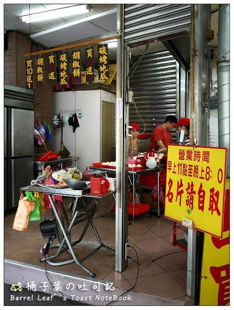
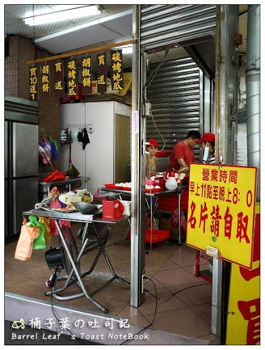

捷運松山新店線美食介紹
捷運中正紀念堂站
杭州小籠湯包
店家介紹 📄
位於台北中正紀念堂附近的杭州小籠湯包，除了是許多遊客來台灣必吃的餐廳外，也是在地人喜愛的小籠包店之一。用餐時間的排隊人潮是家常便飯，師傅於店內現場手工製作、服務人員忙著接待用餐客穿梭在桌間，但是速度還是相當快速。用料新鮮在這可以感受到不一樣庶民小吃小籠包的魅力。
店內環境
沒有過多精緻的裝潢
餐點價格 💰
依菜單上為主，價格平實。
- 服務方式:內用⭕️、外帶⭕️、外送❌
- 營業時間🕒：早上11:00-晚上10:00
- 地址:台北市大安區杭州南路二段19號
- 交通🚇:距離中正紀念堂站二號出口步行約10分鐘
- Google地圖
- Googl評分:3.8⭐️
早澤
店家介紹 📄
位在中正紀念堂附近巷弄內的早澤是間早餐店。店內佈置處處充滿細節，盛盤方式也比一般傳統早餐店來的精緻。餐點名稱帶點玩心，但道道美味。想要優雅吃份早餐，來這裡就對了。記得假日要早點來不然可是要排隊呦！
店內環境
裝潢風格清新舒適、佈置用心
餐點價格 💰
依菜單上為主。
金峰紅燒肉飯
店家介紹 📄
切成條狀的滷肉屬於肥肉偏多一點的肉燥，滷的金黃入味加入香菇跟跟油蔥，鹹香卻不死鹹配上附的醃瓜一碗滷肉飯一下子就吃光光。 跟一般小吃店常見的滷蛋不同，金鋒的是滷鴨蛋。鴨蛋比起雞蛋口感較濕潤，也比較有香氣。滷肉飯加上一顆滷的香香入味的滷鴨蛋是不少人的定番菜單。上餐速度快
店內環境
乾淨、舒適
餐點價格 💰
依菜單上為主，價格平實。
- 服務方式:內用⭕️、外帶⭕️、外送⭕️
- 營業時間🕒：早上08:00～下午01:00
- 地址:台北市中正區羅斯福路1段10號
- 交通🚇:距離捷運中正紀堂站2號出口步行約1分鐘
- Google地圖
- Googl評分:3.9⭐️
溫定食
店家介紹 📄
第一印象是到中正紀念堂不用100元的一餐有這麼多蔬菜吃，而且上餐快速！第一口湯很淡，建議跟著麵條吃，最後喝湯，你會發現湯十分甘甜。雖然是小店，但服務態度一點也不草率，有些人認為店裡的油耗味較重，對油味不喜歡的人，請做一個的評估。綜上所述，這是一家CP值的悉尼高店，在這個區域能以這種飯菜的價格不容易。
店內環境
有為顧客提供茶水和餐巾紙使用
餐點價格 💰
依菜單上為主。
- 服務方式:內用⭕️、外帶⭕️、外送❌
- 營業時間🕒：週一至週日 上午 11:30–下午 2:30，下午 5–8:30
- 地址:台北市中正區羅斯福路1段25號
- 交通🚇:距離捷運中正紀堂站2號出口步行約1分鐘
- Google地圖
- Googl評分:3.9⭐️
豆味行
店家介紹 📄
數十年來深受中正紀念堂附近居民喜愛，甚至還有很多人宅配、團購也要一吃，據說豆花、甜湯也很厲害值得一提的是店家的特製辣椒可是深受許多愛辣人士喜愛，來這裡記得一定要體驗辣椒醬的美味！
店內環境
乾淨、舒適
餐點價格 💰
依菜單上為主。
- 服務方式:內用⭕️、外帶⭕️、外送❌
- 營業時間🕒：週一至週六 上午 11：15–晚上9:00 星期日公休
- 地址:台北市中正區南昌路一段64號
- 交通🚇:捷運中正紀念堂站1號出口跟南門市場間的巷子轉入，過星巴克後左轉步行約三分鐘可抵達
- Google地圖
- Googl評分:4.2⭐️
楊家麵食館
店家介紹 📄
上餐很快，位在中正紀念堂附近的老字號楊家麵食館，看起來跟一般麵食館沒有差別。 但其實他們可是擁有巨無霸煎餃之稱的店家。 每日手工製作的煎餃，現點現煎吃得到最熱騰騰的美味
店內環境
乾淨、舒適
餐點價格 💰
依菜單上為主。
- 服務方式:內用⭕️、外帶⭕️、外送⭕️
- 營業時間🕒：週二至週日 11:00-14:00 、17:00~20:00、 週一公休
- 地址:台北市中正區寧波東街15號
- 交通🚇:捷運中正紀念堂站3號出口出來步行約五分鐘可抵達，中正紀念堂大孝門斜對面。
- Google地圖
- Googl評分:3.9⭐️
 

赤肉胡椒餅烤地瓜
店家介紹 📄
美味的胡椒餅，價格實惠。蔥和豬肉的平衡。味道很好，不太油膩也不太鹹，簡直完美。
店內環境
沒有內用、但製作環境乾淨
餐點價格 💰
依菜單上為主。
- 服務方式:內用❌、外帶⭕️、外送❌
- 營業時間🕒：週一至週六 上午11:00–晚上8:00 星期日公休
- 地址:台北市中正區羅斯福路1段25號
- 交通🚇:捷運中正紀念堂站2號出口出來步行約1分鐘可抵達
- Google地圖
- Googl評分:4.1⭐️